Auto mode
The app recognizes the picture (photo, drawing, text, damaged shot) and chooses the model and size. Noisy photos are cleaned first and fine grain is put back afterwards, so the result does not look painted.
EasyUpscale enlarges and improves images with AI right on your computer. No cloud, no subscription, no waiting in a queue.
You can download the trial version for free and try it. Buy a license when you like it.
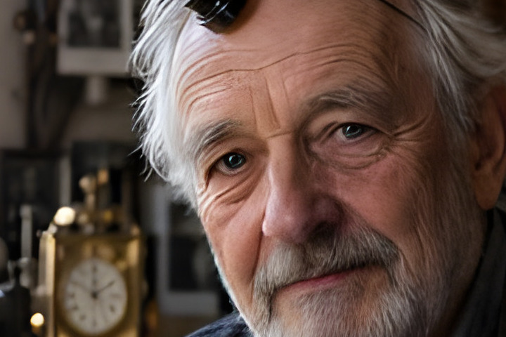
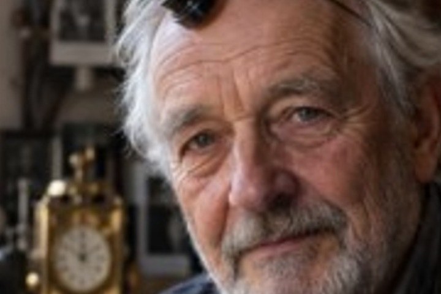
In the original shot (384 × 256 px) this detail is only 75 × 50 pixels. Left: its real pixels, middle: a standard enlargement, right: EasyUpscale (4×).
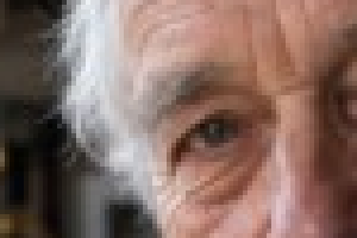
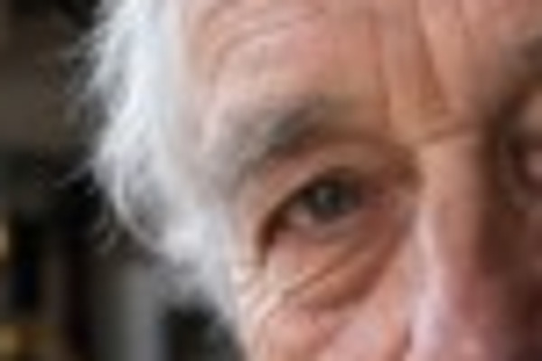
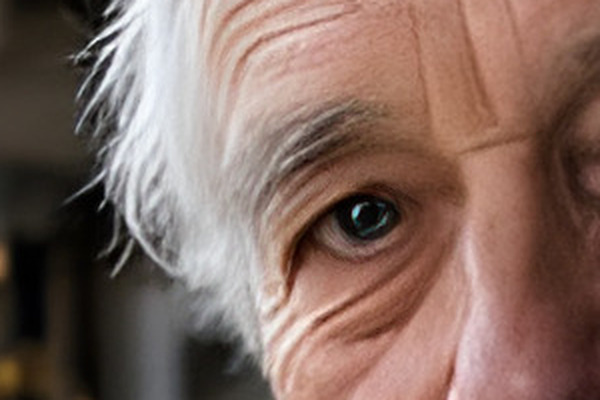
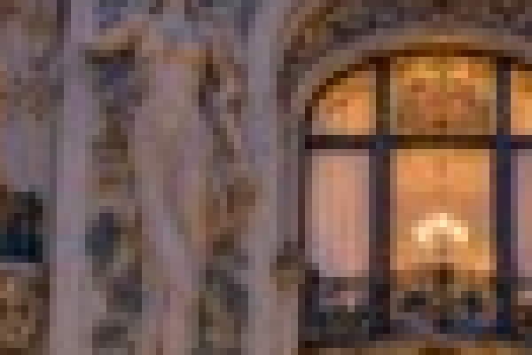
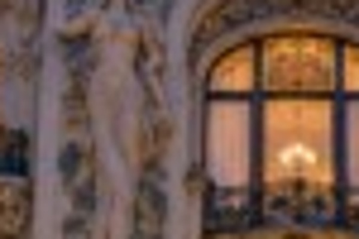
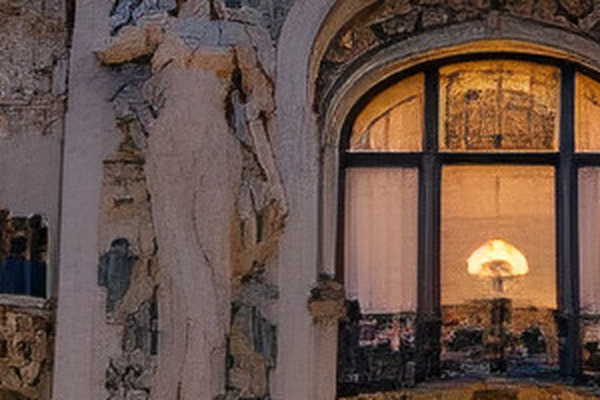
In Auto mode the app recognizes the picture and picks the model, the scale and the look by itself.
Drop a photo or a whole folder into the window. Or right-click it in Explorer and choose the enlarge command.
The app works out what the picture shows and chooses a fitting model. You see the progress and can cancel at any time.
Slide to compare the original with the result and save it as PNG, JPEG, WebP, AVIF, TIFF or BMP.
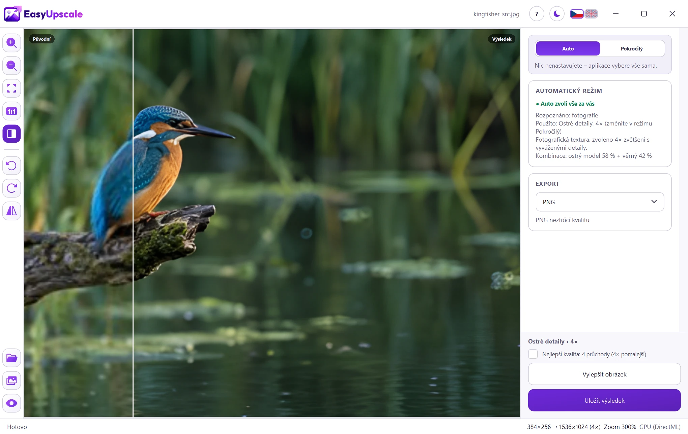
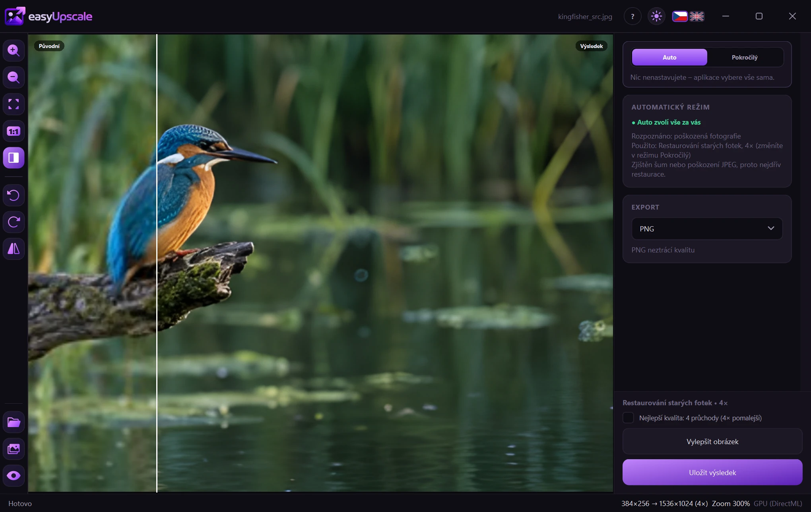
Move the line to compare. The original shots are only 384 × 256 px. Left: standard enlargement, right: real output of the app (the Sharp detail model).
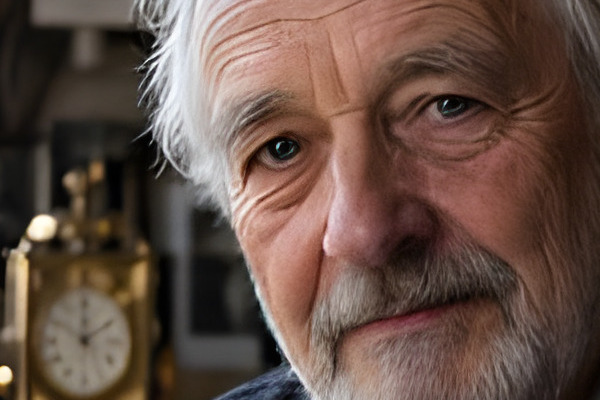
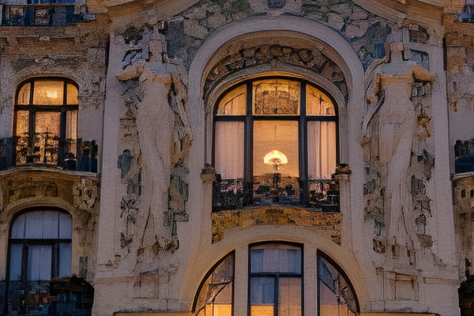
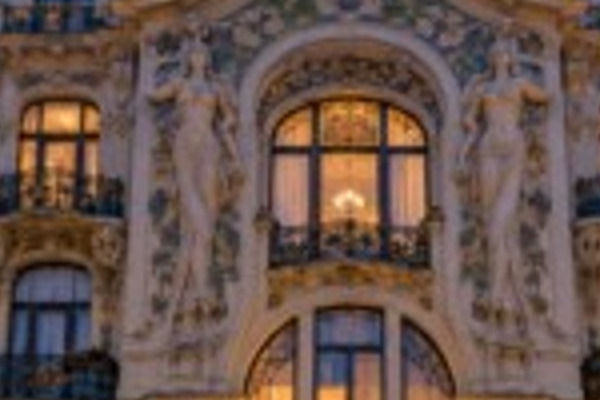
The app recognizes the picture (photo, drawing, text, damaged shot) and chooses the model and size. Noisy photos are cleaned first and fine grain is put back afterwards, so the result does not look painted.
Choose the model by hand, blend two models at a chosen share and set the size, from 2× and 4× to presets like 4K or Full HD.
Enlarge a whole folder at once. Or point the app at a folder where new pictures are enlarged by themselves in the background.
Profiles and sliders for sharpness, noise smoothing and closeness to the original. Changes to the result show at once, without a new run.
Saves PNG, JPEG, WebP, AVIF, TIFF and BMP. Transparency and metadata are kept.
A command in the Explorer right-click menu, an option to start with Windows, and a light and dark theme.
Images are processed entirely on your graphics card. Nothing is uploaded, there are no credits per picture and no queue.
The only thing the app sends is the license key and the computer name when it checks the license. Without a license key it does not connect to the internet. Details are in the privacy policy.
The real EasyUpscale window. The same app works in a light and in a dark theme.
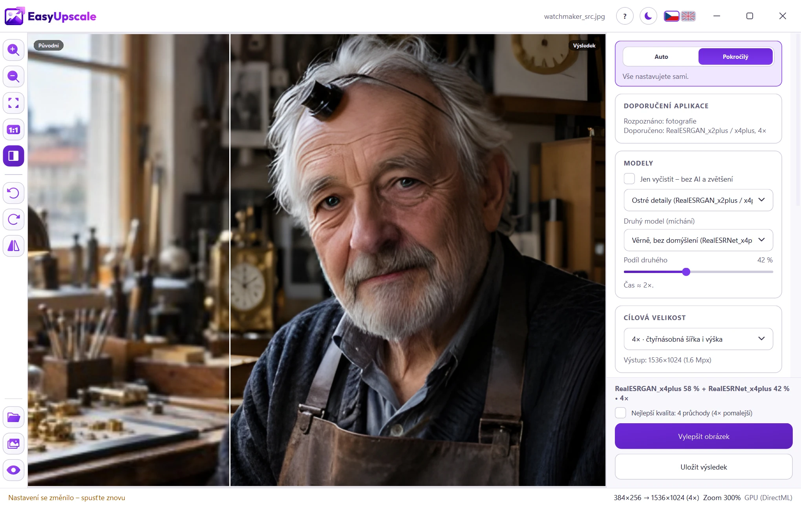
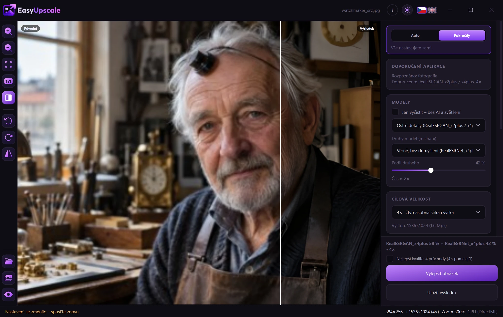
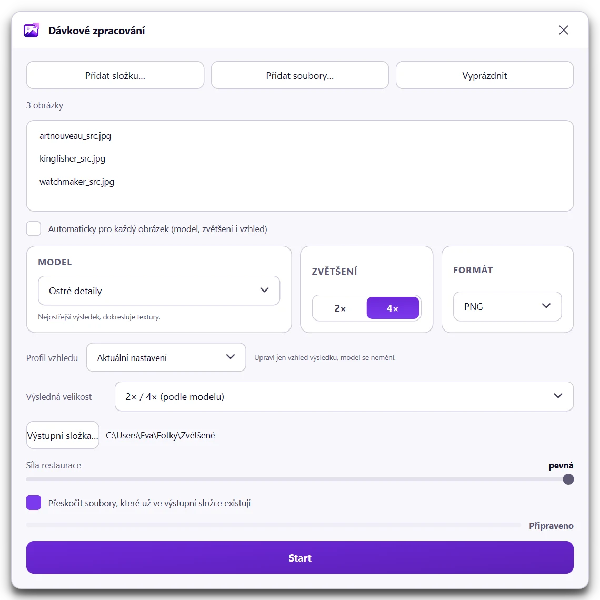
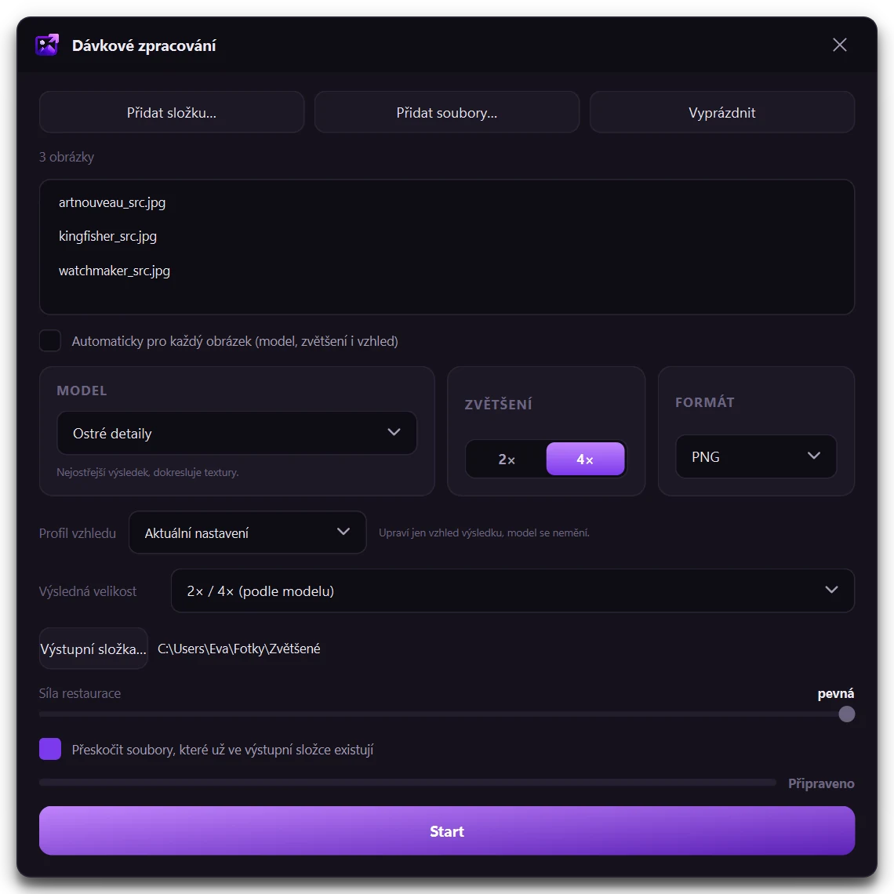
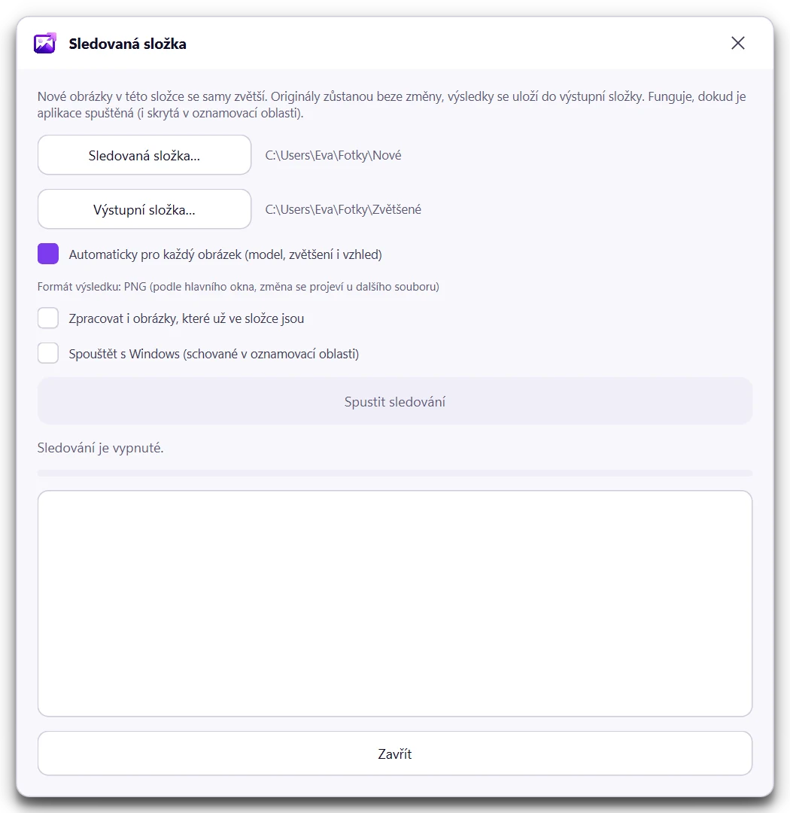
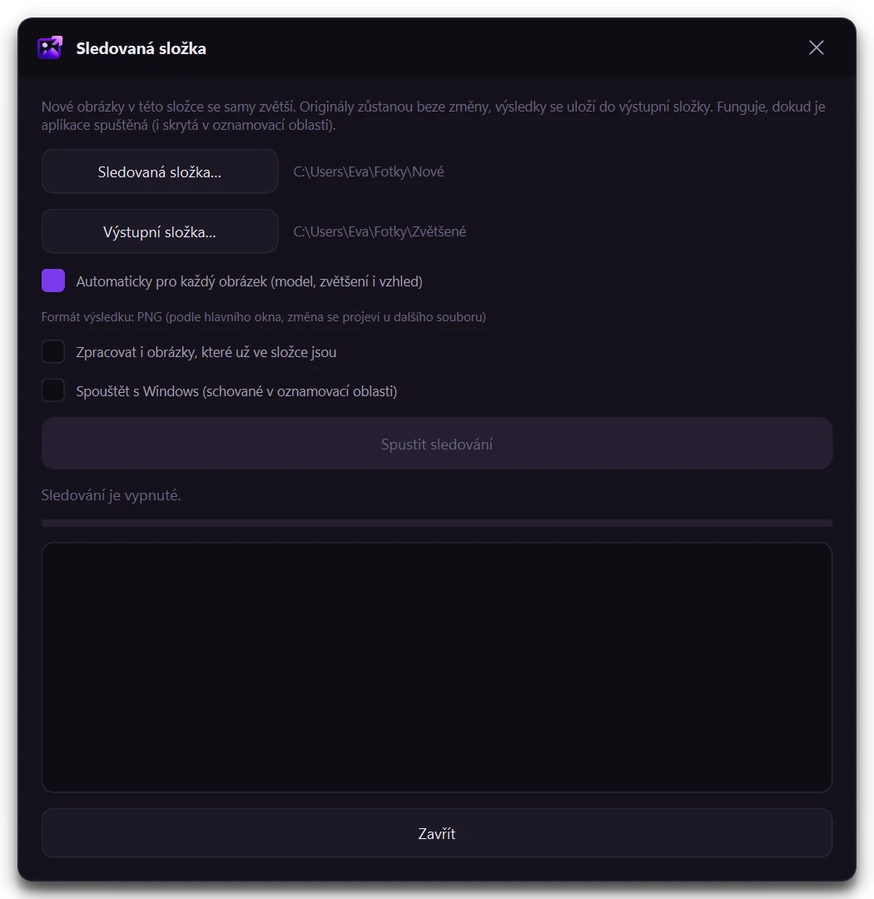
Every feature works without a license. The only difference is a watermark across the result, lighter in the preview and stronger in saved files.
No. Everything is computed on your computer. Details are in the Privacy section.
The key is activated once over the internet. After that the app quietly re-checks the license now and then and works without a connection for up to 30 days after the last check. A license covers one computer. When you change computers, remove the activation in the app and use the key on the new one.
A license is digital content delivered right after payment, and by buying you agree that the statutory 14-day right of withdrawal ends. That is why the app is free to try first. If the app does not work on your computer and we cannot fix it, we refund you. Details are in the Refund policy.
A simple desktop tool. Your graphics card, your files, your result.